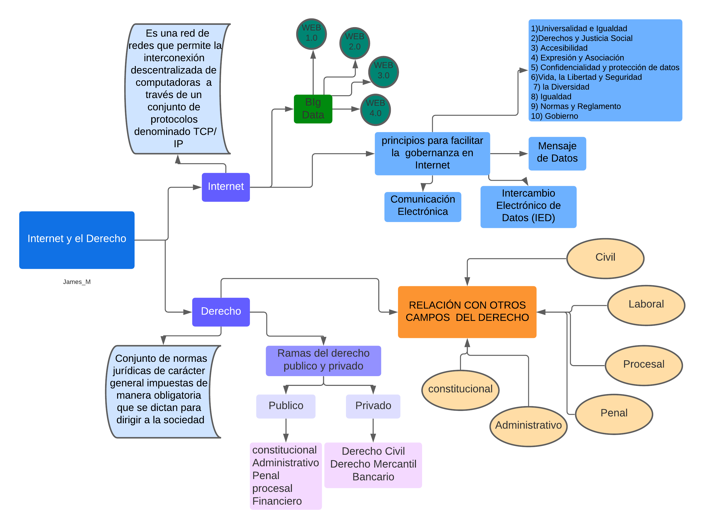

Mapa mental Internet y el Derecho
El desarrollo de las TIC e Internet representan un reto para los tradicionales límites del derecho afianzados en la noción de soberanía y la localización espacial de las actividades. Las características del Internet tales como su naturaleza transfronteriza, independencia geográfica, amplia cobertura, anonimato, portabilidad, fácil reproducción, convergencia, conectividad y difícil control, son desafíos para el nuevo derecho. El objetivo es presentar un panorama sobre los aspectos más relevantes que Internet trae para el derecho, así como las áreas o temáticas más críticas o controversiales; mediante un método cualitativo e inductivo, usando fuentes primarias y secundarias y técnicas de revisión documental, estudios de caso y observación directa. Se concluye que es necesario que académicos, jueces y abogados, conozcan más los aspectos tecnológicos de la comunicación virtual, para así entender, manejar y resolver los problemas jurídicos que se presentan en el ambiente de Internet.